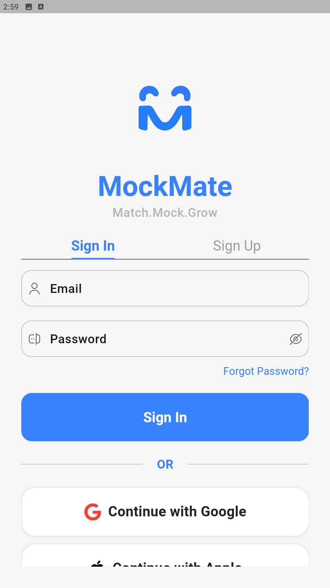

Designing a Chrome extension for dyslexic students
Experience
UI/UX Designer
Hooc AI Technologies
Noida, UP
Designed user experiences for 8+ client products across healthcare, e-commerce, wellness, services, and logistics.
Translated product requirements into user flows, information architecture, wireframes, high-fidelity interfaces, and interactive prototypes.
Designed onboarding, progressive profile creation, identity verification, compatibility-based discovery, and permission-based communication experiences.
Streamlined delivery booking and driver workflows through QR-based interactions, vehicle selection, charge handling, and digital document storage.
Jul 2026 — Oct 2026
UI/UX Design Intern
Hooc AI Technologies
Noida, UP
Translated product requirements into intuitive user flows and structured interface designs.
Created wireframes and interactive prototypes to explore user journeys and interaction patterns.
Contributed to high-fidelity UI design and reusable design systems to maintain visual consistency.
Collaborated with developers on design handoff and implementation across multiple product domains.
Jan 2026 — Jul 2026

UI/UX Design Intern
Mockmate
Remote
Designed user experiences for a peer-learning platform connecting students with interview partners, study mates, and collaborators.
Structured user journeys and created wireframes to simplify core platform interactions.
Developed interactive prototypes and high-fidelity interfaces to communicate design solutions.
Collaborated with developers to improve usability and create a more engaging learning experience.